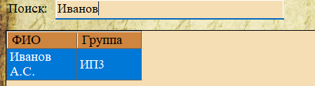

Для быстрого поиска записей в текущем разделе используется строка поиска (поле ввода с подписью «Поиск:»). Она расположена в верхней части главного окна, под панелью инструментов.

Рис. 1. Строка поиска — поле ввода с плейсхолдером «Search»
Принцип работы
Поиск является динамическим (фильтрующим) — таблица перефильтровывается автоматически при каждом изменении текста в поле поиска. Не нужно нажимать дополнительные кнопки.

Рис. 2. Пример: поиск по фамилии «Иванов» в разделе «Студенты»
Особенности поиска:
— Поиск выполняется одновременно по всем видимым текстовым полям текущей таблицы (ФИО, название группы, тема документа и т.д.).
— Поиск нечувствителен к регистру (буквы в любом регистре).
— Поиск проверяет вхождение подстроки (необязательно полное совпадение). Например, запрос «курс» найдёт и «курсовая работа», и «курсант».
— Поиск работает на стороне сервера базы данных, что обеспечивает высокую скорость даже при большом количестве записей.
Примеры использования:
| Что ввести | Что будет найдено |
|---|---|
| Иванов | Студенты с фамилией Иванов |
| диплом | Все дипломные работы (в теме, типе документа) |
| Гр-1 | Студенты из группы «Гр-1а», «Гр-1б» и т.д. |
| 2022 | Документы, созданные в 2022 году; студенты, поступившие в 2022 году |
Очистка поиска
Чтобы отобразить все записи раздела, просто удалите текст из поля поиска. Таблица автоматически вернётся к полному списку.
Важно: Поиск применяется только к текущему разделу. При переключении между разделами поисковый запрос сбрасывается, и отображаются все записи нового раздела.
Примечание: Поиск работает совместно с фильтрацией (см. следующий раздел 2.1.3). Если активны фильтры по столбцам, поиск будет искать только среди уже отфильтрованных строк.